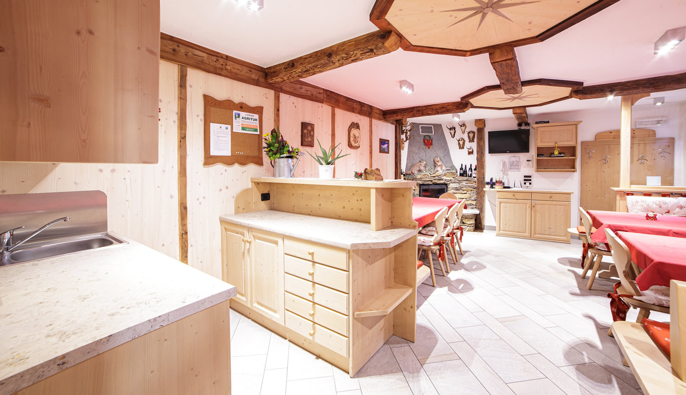

LA POSTA ⌾ GESTIONE FAMILIARE
Vi risponde
la famiglia
NIENTE CENTRALINO, NIENTE ROBOT: DITECI QUANDO VOLETE VENIRE E IN QUANTI SIETE.

DOVE
Frazione Piazzola 171/D
38020 Rabbi (TN)
LOCALITÀ COLER ▪ VAL DI RABBI, TRENTINO
LA STRADA ⌾ COME ARRIVARE
IL MASO PRENDE IL NOME DALLA LOCALITÀ COLER, A CINQUE CHILOMETRI DAL PAESE DI PIAZZOLA DI RABBI E POCO LONTANO DALLO STABILIMENTO TERMALE DI RABBI FONTI.
SI SALE PER UNA STRADA PRIVATA FINO AL PICCOLO NUCLEO DI MASI IN POSIZIONE SOPRAELEVATA, CIRCONDATO DA PRATI, BOSCHI E PENDII ALPINI.
LA BORGATA DI MALÈ, CENTRO PRINCIPALE DELLA VAL DI SOLE E STAZIONE DELLA FERROVIA TRENTO–MALÈ, È A QUINDICI CHILOMETRI; A UNA VENTINA C'È L'IMPIANTO DI RISALITA DI DAOLASA.
LE DATE ⌾ DISPONIBILITÀ E PREZZI
Verificate le date
senza uscire da qui
SCEGLIETE ARRIVO, PARTENZA E OSPITI: LA DISPONIBILITÀ È QUELLA VERA DEL GESTIONALE DEL MASO, LA CONFERMA ARRIVA SUL PORTALE DI PRENOTAZIONE.
IL CONTROLLO APRE IL PORTALE SICURO DI PRENOTAZIONE DEL MASO, CON LE VOSTRE DATE GIÀ IMPOSTATE.
LE DATE ⌾ UN MASO SOLO
Le date giuste
si prendono presto
IL MASO È UNO E SI AFFITTA PER INTERO: SE AVETE UN PERIODO IN MENTE, PARLIAMONE.